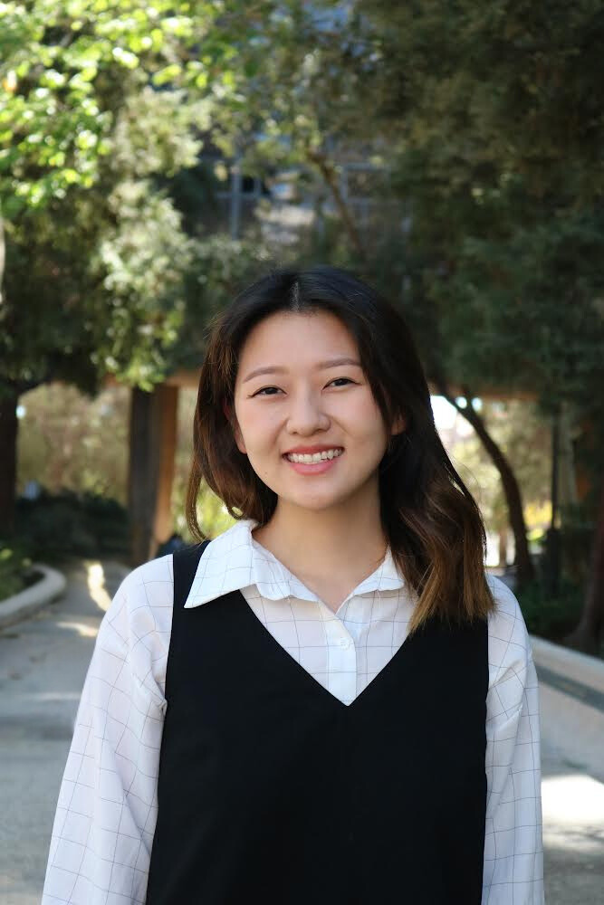
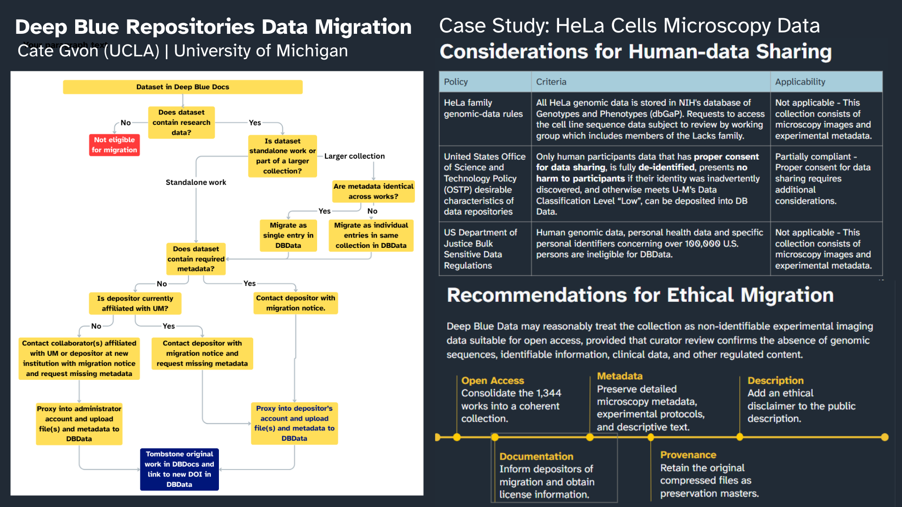
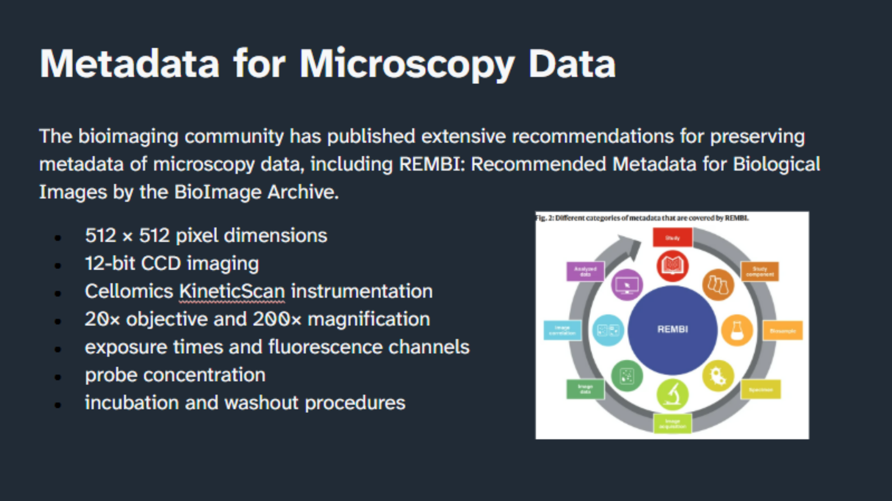
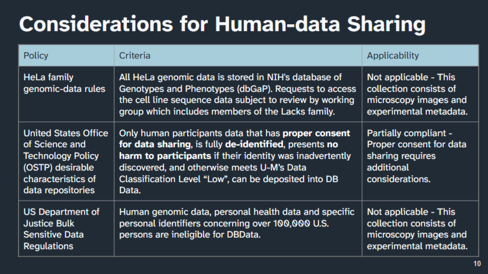
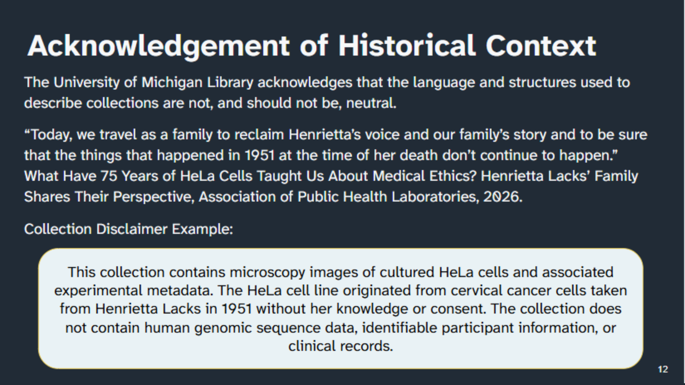
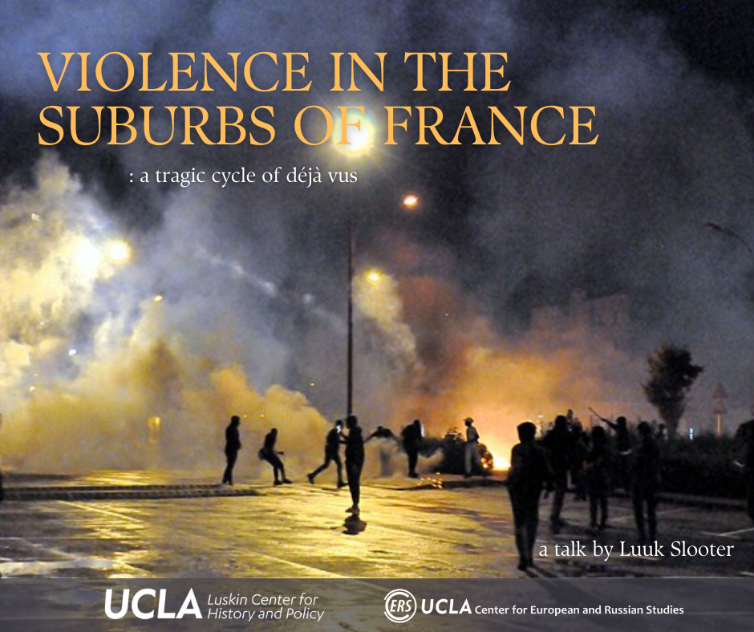
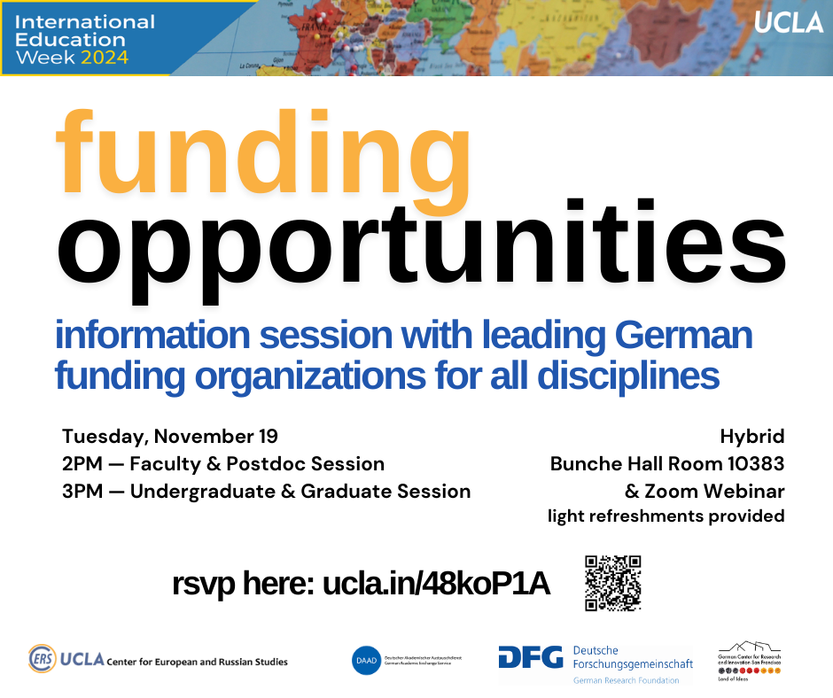

Hello, I am Cate Gvon.
I am a Master of Library and Information Science student at UCLA and the Program Coordinator at the UCLA Center for European and Russian Studies. My research interests include technologies of inclusion, ethical data stewardship, and information infrastructures related to maternity care and women's health in the United States.
I am a graduate student researcher and lab manager in the UCLA Disability and Extended Reality Lab (UCLA Office of Advanced Research Computing and UCLA Disabilities and Computing Program), voting member on the UCLA Committee on Disability (UCOD), and an Inclusive Excellence Committee member at the UCLA International Institute.

My CV
Experience
There is an urgent need for accessibility research and testing as digital technologies become more integrated into higher education pedagogy. Our team is exploring the usability of VR and XR modules for classroom instruction among students with and without disabilities. Through a mixed-methods approach combining observational usability testing, student surveys, qualitative interviews, and comparative analysis, we aim to understand how accessibility barriers emerge in immersive learning environments and develop evidence-based recommendations for more equitable instructional design.




As research repositories evolve, the challenge of stewarding materials deposited under earlier systems must be addressed. As a data intern with the NNLM NCDS, I explored how legacy research datasets in the University of Michigan Library’s Deep Blue Documents repository could be efficiently migrated to Deep Blue Data, a repository designed specifically for the long-term preservation and sharing of research data. The work involved identifying eligible datasets, reviewing metadata and licensing requirements, and developing a migration workflow that would preserve the context, provenance, and accessibility of the original records.
A particularly complex case involved a collection of HeLa cell microscopy images distributed across 1,344 individual repository records. Given the history of the HeLa cell line, which originated from cells taken from Henrietta Lacks without her knowledge or consent, this collection raised important questions about the responsibilities of research repositories in stewarding materials produced through historically exploitative research practices. I approached the migration as an opportunity to consider how archival description, provenance documentation, and access policies might better account for this history while preserving the scientific value of the collection.
Access my "best practices for ethical stewardship of HeLa cells microscopy images" .


Education
- MLIS, UCLA (Expected 2027)
- B.A. Russian Studies, History & Asian Languages, UCLA (2023)
Awards
- 2026 — ASIS&T Tuition Scholarship (Association for Information Science and Technology)
- 2025–2026 — Marjorie S. Mardellis Fellowship (American Library Association)
- 2025–2027 — Kaleidoscope Scholar (Association of Research Libraries)
University & Public Service
- 2026 — Inclusive Excellence Committee Member, UCLA International Institute
- 2025–2027 — Voting Member, UCLA Committee on Disability
- 2025 — Library Volunteer, Braille Institute of Los Angeles
Contact Me
Email: gvon [at] ucla.edu